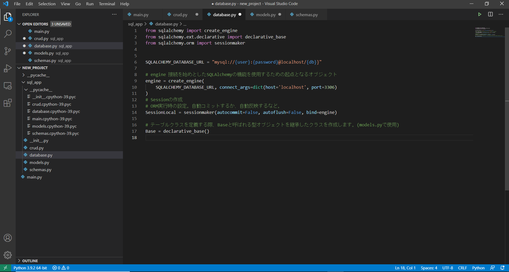
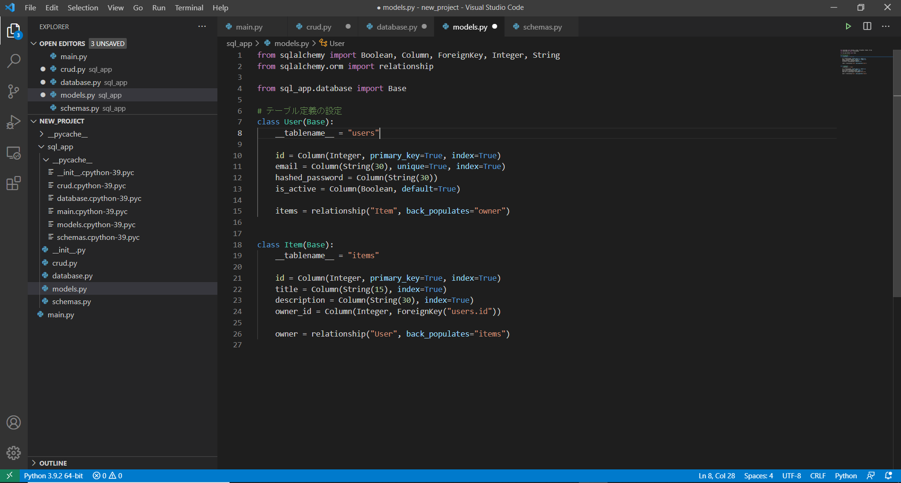
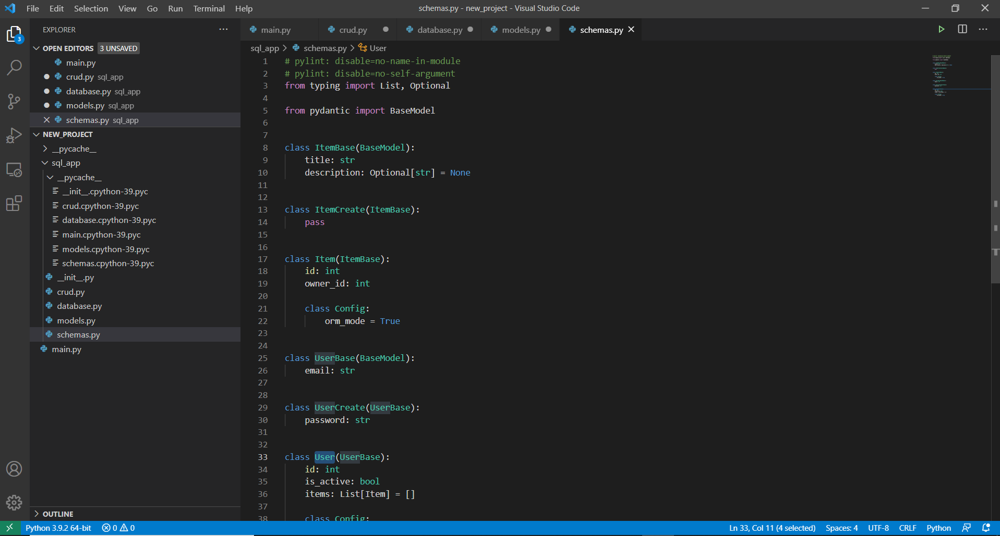
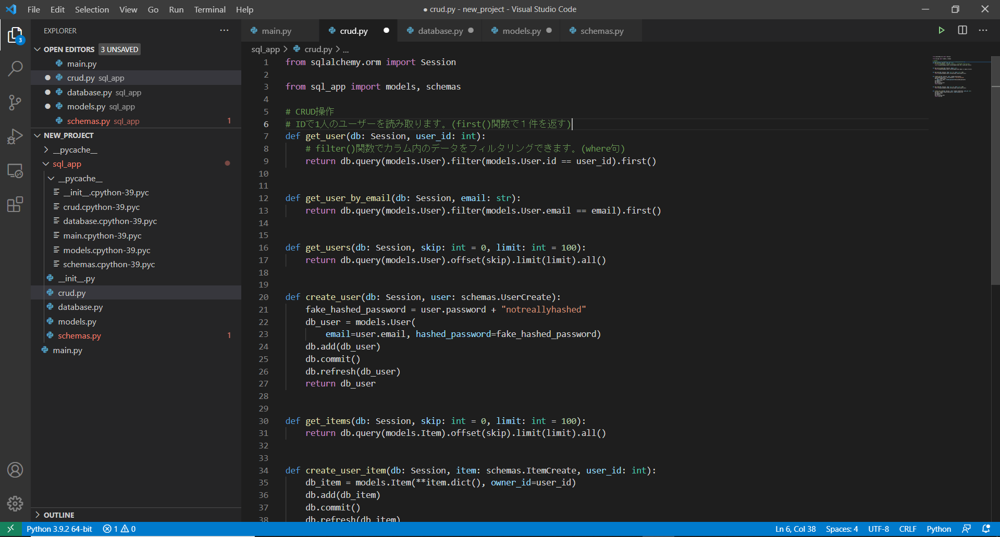
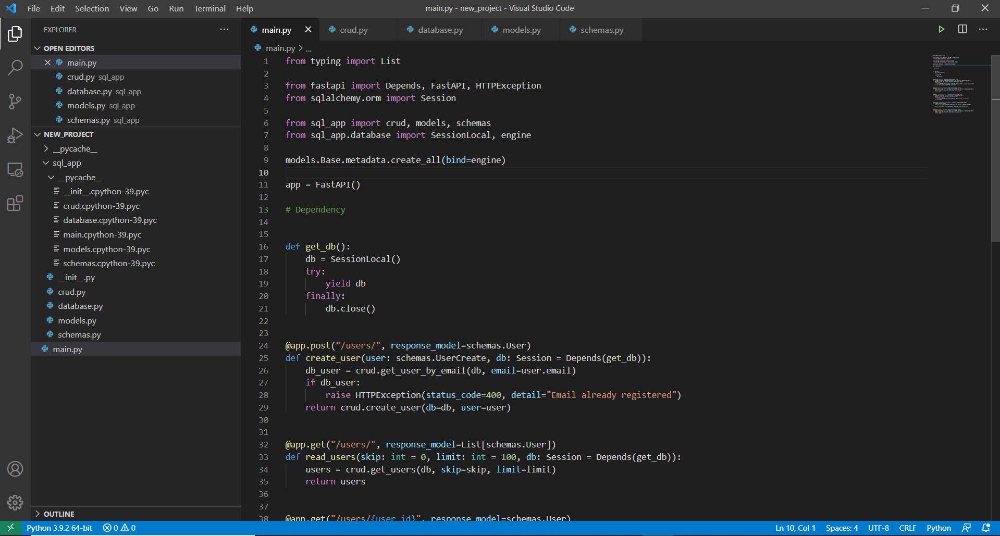
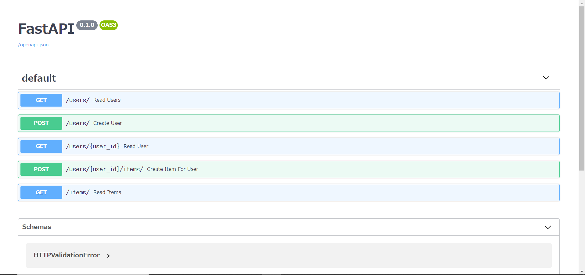
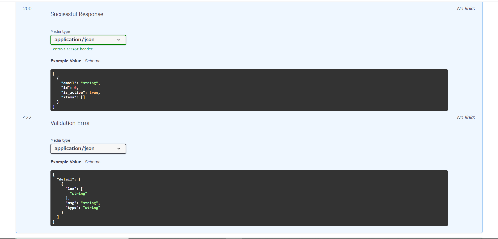

SQLAlchemy＋MySQL

SQLAlchemyとは
SQLAlchemyはPythonでよく利用されているORM。
SQLite、MySQL、PostgreSQL、Oracle などのデータベースに使用することができます。
公式によるとredditやドロップボックスなどでも使用されているみたいです。
主に以下のような機能を持っています。
・ データベースへの接続、SQLの実行
・ メタデータ
・ SQL Expression Language
・ ORM
データベースへの接続、SQLの実行
現在では下記のDBに対応しているみたいです。
SQLite、Postgresql、MySQL、Oracle、MS-SQL
※Firebird、Sybaseは非推奨になっています。
メタデータ
テーブルのスキーマをPythonのコード上で定義する方法です。DBMSに依存しない方法でスキーマを記述することができます。
定義したメタデータをengineオブジェクトと連携することにより実際のデータベスに反映することができます。
また、すでに存在するテーブルからメタ情報を生成することも可能です。(リフレクション)
SQL Expression Language
SQLAlchemyにはプログラム言語とSQLを分離するために独自のクエリライクな記法が用意されており、これをSQL Expression Languageと呼びます。
SQL Expression Languageを使用することで、PythonコードとSQLコードを混在させないようにすることができ、コードの保守性を向上させます。
ORM
クエリの実行結果をモデルに格納します。オブジェクトへのデータセットが自動化されるため、開発を効率化させることができます。
SQLAlchemyを使用したDBとの接続
下記、公式のチュートリアルをもとに実装しました。
https://fastapi.tiangolo.com/ja/tutorial/sql-databases/
ファイル構造
.
└── new_project
├── main.py
└── sql_app
├── init.py
├── crud.py
├── database.py
├── main.py
├── models.py
└── schemas.py
チュートリアルと違い「main.py」の階層を一つ上に置いています。
database.py

今回はSQLiteではなくMySQLを使用しています。
models.py

基本的にチュートリアルと変更はありません。
Stringを指定したカラムに対して最大長の指定を行っています。
schemas.py

こちらも基本的に変更なし。
pydanticのインポートで下記Pylintエラーが出たため
No name ‘BaseModel’ in module ‘pydantic’
下記を参考にエラーを回避させています。
https://github.com/samuelcolvin/pydantic/issues/1961
crud.py

こちらも変更なし。
上記で述べたSQL Expression Languageを使用している部分にあたります。
main.py

こちらも基本的に変更なしですが、チュートリアルと同じディレクトリ構造で
crudやdatabaseのインポートを行うと下記エラーが出てしまいました。
Attempted relative import beyond top-level package
下記を参照に解決してみましたが、正直そんなに理解できていないです。 https://qiita.com/Haaamaaaaa/items/109b3ef0996a543ba95d
Uvicornで実行
チュートリアル通り下記コマンドで実行すると・・・
uvicornsql_app。main：app –reload
このようなエラーが出ます。
Error loading ASGI app. Import string “sql_app。main：app” must be in format “:”.
なので下記コマンドで実行で起動ができました。
uvicorn main:app –reload –host 127.0.0.1 –port 8000
<http：//127.0.0.1：8000 / docs>で確認できます。 

まとめ
今回チュートリアルをもとにSQLAlchemyを使用したDBへの接続を行いましたが
モジュールのインポートなど思いもよらないところで躓くことになりました。
SQLAlchemyではSQL Expression LanguageでSQLを書かなくてよく、便利に感じる一方で
実際に発行されるSQLがわかりづらいので、コストの重いSQLを発行しないためにもSQL Expression Languageの理解を
深めるようにしないといけないと思いました。